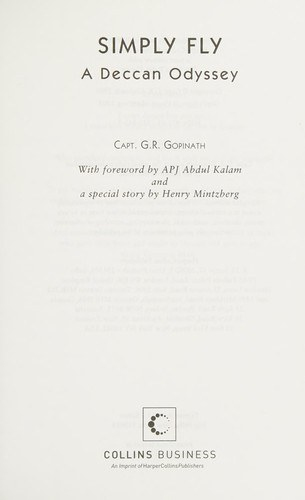

Library › Business & Startups
Simply Fly: A Deccan Odyssey — Summary & Key Lessons

A village boy with an army bag and a stubborn dream made flying cost less than a train ticket, and changed India forever.
📖 OPEN THE FULL INTERACTIVE BREAKDOWN →🌐 Read it in Hindi, Hinglish, Gujarati, Tamil & 22 more languages — free, with audio.
💡 The Big Idea
G. R. Gopinath, a retired army captain and failed farmer, founded Air Deccan in 2003 with one aircraft and a mission: every Indian would fly at one rupee fares. He invented Indian low-cost aviation, forced full-service carriers to slash prices, made Hubli and Madurai reachable, and filled planes with first-time flyers in lungis and turbans. But low fares in a heavily taxed, fuel-importing market meant losses year after year. Under investor pressure he sold control to Kingfisher's Vijay Mallya in 2007, who merged and killed the brand. The book is honest about both the miracle and the price.
🧠 The 8 Key Lessons
Lesson 1: The Mission Must Survive the Spreadsheet
One Rupee Fares
Gopinath's mission was social democratization of air travel, and it worked: occupancy soared, new routes opened and competitors cut fares. But mission does not waive unit economics. Aviation in India carried aviation turbine fuel taxes of up to 30 percent, thin traffic beyond metros and brutal seasonality. A founder must hold the dream and the arithmetic in the same head, or the arithmetic eventually holds the company.
📖 Example: One-rupee and 500-rupee fares filled aircraft to over 80 percent occupancy within a year, but Deccan still lost money on nearly every flight in lean season because fuel and airport costs ate the fare box before takeoff. Read the full example →
⚡ Do this: Write your mission at the top of your P&L. If the numbers under it cannot survive three bad quarters, redesign the model now, not after the losses.
Lesson 2: Regulation Is a Competitor With a Government
Fighting for Permission
Deccan fought regulators for cheap fares, for night flying, for smaller airports, for using leaf-route airports others ignored. Gopinath treated policy as a product constraint to engineer around, petitioning ministers, using media pressure and legal creativity. In heavily regulated Indian industries, the founder who understands the rulebook better than the incumbents holds a real weapon.
📖 Example: When legacy carriers pressured authorities over low fares, Deccan argued its case publicly, positioning cheap flying as national progress. The narrative armor, common man's airline, made attacking it politically expensive. Read the full example →
⚡ Do this: Map the five regulations that shape your industry and find the one that hurts customers most. Build your positioning as the company that fixes it publicly.
Lesson 3: Cost Culture Is Set by the Founder's Own Behavior
No Frills Is Not an Aesthetic
Deccan flew one class, sold food, used secondary airports, turned aircraft around in 25 minutes and printed tickets with no lounge nonsense. Low cost worked because it was a religion from the top: Gopinath knew his fuel burn per hour and fought for every kg of weight. A cost culture cannot be delegated to a spreadsheet; teams copy what the leader counts.
📖 Example: Deccan cut turnaround to near-global-best times and sold tickets through railways booking counters and post offices, reaching customers no airline marketing budget ever touched. Read the full example →
⚡ Do this: Pick the three costs that decide whether your unit economics live, and review them personally every week. Culture follows attention.
Lesson 4: Growth Can Outrun the Org That Delivers It
Sixty Aircraft, Growing Pains
Deccan absorbed Air Sahara, ordered dozens of aircraft and merged its two brands (Air Deccan and the low-cost Simplifly Deccan) while hiring thousands. On-time performance slipped, unions and integration chaos grew, and service wobbled exactly when the brand could least afford it. Scaling multiplies whatever exists, including the mess.
📖 Example: After the Sahara deal and rapid fleet expansion, Deccan's punctuality and baggage handling suffered public lows while cash bled; the operational strain became a reason investors pushed for a sale rather than a rescue. Read the full example →
⚡ Do this: Before you double any volume, name the two processes that will break first and fix them deliberately. Growth amplifies cracks into canyons.
Lesson 5: Selling Control Has a Founder's Grief Nobody Warns You About
Kingfisher Takes Over
Out of options and out of investor patience, Gopinath sold control to Mallya's Kingfisher, which promised synergies and then strangled the low-cost brand he built. He describes boardroom humiliation, brand burial and watching his mission used as marketing. Founders must model the emotional cost of surrendering control, because financial models never include it.
📖 Example: Kingfisher merged Deccan into its full-service identity, abandoned the low-fare positioning, and within years Kingfisher itself collapsed, taking jobs and the pioneer's legacy with it. The mission brand died before the money did. Read the full example →
⚡ Do this: If you ever take a controlling investor, write down the three things you will never let change. Negotiate them when you have leverage, not when you are out of cash.
Lesson 6: Pioneers Get the Arrows, Settlers Get the Land
What the Revolution Cost
Deccan created the market, taught India to buy tickets online, built route networks others harvested, and normalized low fares for everyone from IndiGo onward. The pioneer educated the market and absorbed the losses; fast followers with deeper pockets landed on prepared ground. Being first is a strategy only if you can also be durable.
📖 Example: IndiGo, launched three years after Deccan with disciplined ordering and patient capital, rode the market Deccan created and became one of the world's largest airlines by orders, while Deccan's brand vanished by 2008. Read the full example →
⚡ Do this: If your plan depends on educating a market, calculate how long you can survive being copied. Partner or niche down until you can.
Lesson 7: Failure at 40 Is Raw Material, Not a Verdict
The Farmer Years
Before aviation, Gopinath failed at sericulture, farming and politics, returning from the army to dirt-poor years in Hosur. Those failures taught him soil, patience and the specific humiliation of unpaid bills, which later became empathy for the small-town customer. A founder's résumé of failures is often the actual qualification for the breakthrough.
📖 Example: His farm venture weathered government apathy and Middle East market crashes; the skills of surviving scarcity, negotiating with bureaucracy and employing villagers cheaply and humanely became Deccan's founding toolkit. Read the full example →
⚡ Do this: Write down what your worst professional failure taught you that no competitor with a smooth career could know. That is your actual edge.
Lesson 8: A Brand Belongs to the Customer the Day They Claim It
The Common Man's Airline
Farmers flew with chickens, grandmothers flew for the first time, and staff learned to serve passengers who had never seen an airport. The emotional ownership ordinary Indians felt for Deccan was its deepest moat and its loudest memory. When the brand was killed, people mourned an airline like a public promise broken.
📖 Example: Passengers photographed their first flights, newspapers ran stories of first-generation flyers, and even today Deccan is remembered with affection while bigger airlines are remembered with invoices. Read the full example →
⚡ Do this: Identify the customer nobody in your industry respects, and win them so completely that your brand becomes their proof of progress.
✅ 5-Step Action Plan
- Price your product for the customer the industry ignores, and build the cost structure that makes it survivable.
- Review your three decisive costs personally every single week.
- Before scaling volume, fix the two processes most likely to crack.
- Treat regulation as a design constraint: turn the rule customers hate into your positioning.
- If you must sell control, lock your mission's non-negotiables in writing while you still have leverage.
⚠️ When This Doesn't Work
This is an autobiography, so it is one man's account: rivals, investors and Kingfisher's side of the merger story are given little room, and some numbers are remembered rather than audited. Aviation economics also changed after 2012 with new tax regimes and consolidation, so the unit-cost math here is a 2003 to 2007 snapshot. Read it for founder psychology and market creation, not as a current industry manual.
💀 The Graveyard Proves It
✈️ Air Deccan — The Airline That Made Flying Affordable — Then Flew Into the Ground. Burn: Acquired at a fraction of its promise; the 'common man's airline' vanished into Kingfisher's debt. Read the full case study →
💬 Best Quotes from Simply Fly: A Deccan Odyssey
- “I want to make the common man of India fly.”
- “Passion is a poor business plan unless it is married to arithmetic.”
- “A pioneer gets the arrows, and the settlers get the land.”
Interactive version: mark lessons as read, listen in your language, share quote cards.